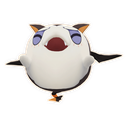

自己逛桌面
待机时会随机向左或向右走，走动时身体会伸缩变形。走完会停一会儿，有时还会做个小动作。

PIGDING.WINDOWS 桌宠 当前版 {{VERSION}}
桌面上住了个小恶魔。
闲下来会沿屏幕走一段，停下来做个小动作。点点它，你会收到一个动作和一张表情。
点一下，看它的表情
01 / FEATURES
待机时会随机向左或向右走，走动时身体会伸缩变形。走完会停一会儿，有时还会做个小动作。
轻点随机播放八种互动之一，并弹出对应表情。长按可以摸摸，按住移动就能把它拖到别处。
普通色、粉色异色都在同一个程序里。右键菜单还能调大小、帧率、置顶、随机走动和表情开关。
02 / QUICK START
下载 Windows x64 的 ZIP 文件。
保留程序旁的 resources、locales 和 DLL 文件。
PIGDING.exe启动后，右键宠物或托盘里的图标打开设置。
03 / DOWNLOAD
当前版 {{VERSION}} · {{PLATFORM}} · {{SIZE}}
同时下载 4 段，完成校验后保存 ZIP。
SHA-256{{SHA256}}